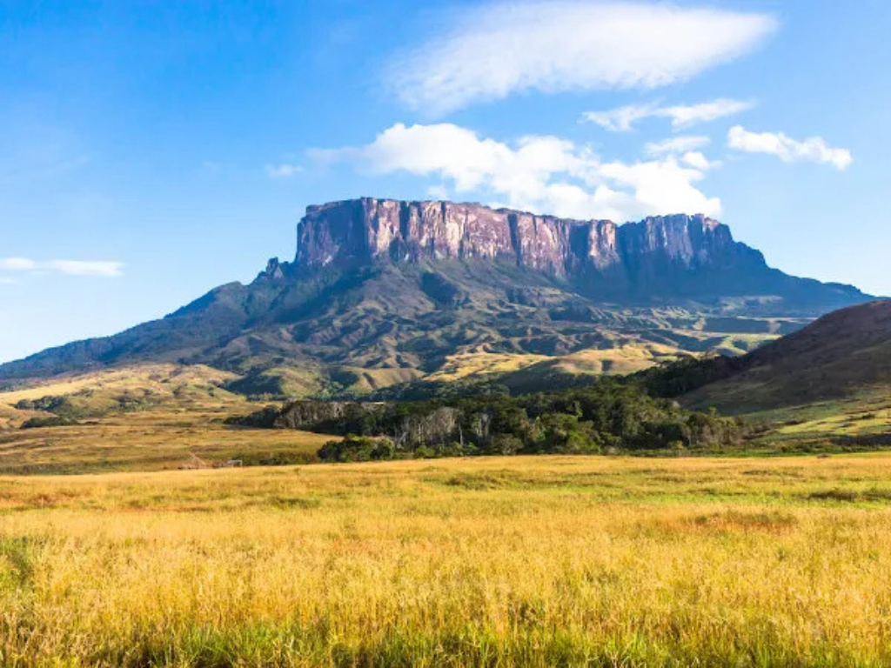

O Roraima está localizado no extremo Norte do Brasil e faz fronteira com a Venezuela e a Guiana. Conhecido por suas paisagens naturais e pela forte presença da Floresta Amazônica, o estado possui grande diversidade ambiental, incluindo áreas de serras, savanas e reservas indígenas. Sua capital, Boa Vista, é a única capital brasileira totalmente localizada no hemisfério Norte. A economia de Roraima baseia-se principalmente na agropecuária, no comércio, no extrativismo e no setor de serviços. O estado também possui importante diversidade cultural, marcada pela presença de diferentes povos indígenas e pela influência das regiões de fronteira.

Voltar